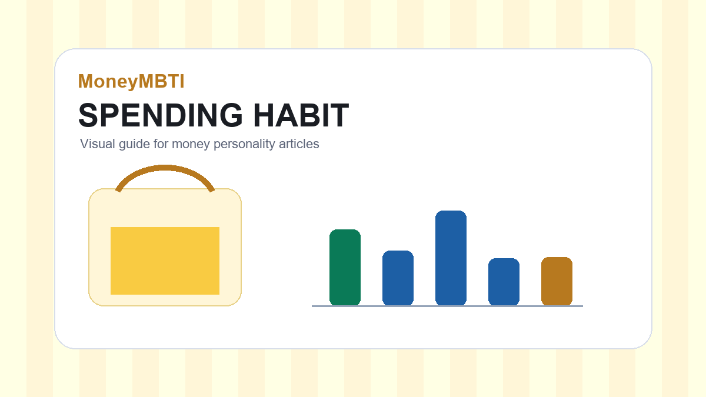

왜 이 주제를 먼저 봐야 할까
물건을 살 때는 필요와 욕구가 섞입니다. 당장 좋아 보이는 물건도 며칠 뒤에는 생각보다 자주 쓰지 않는 경우가 있습니다.
후회가 남는 구매는 대개 사용 장면이 구체적이지 않습니다. 살 이유는 많지만 실제로 언제, 어디서, 얼마나 쓸지는 흐릿합니다.
돈 습관을 다룰 때 중요한 것은 누군가의 정답을 그대로 따라 하는 것이 아닙니다. 같은 소득과 비슷한 생활비를 가진 사람이라도 불안해지는 지점, 만족을 느끼는 지점, 미루기 쉬운 지점이 다릅니다. 그래서 MoneyMBTI에서는 금액만 보지 않고 선택이 일어나는 장면을 함께 봅니다.
이 글은 투자 상품이나 금융상품을 추천하기 위한 글이 아니라, 생활 속 돈 습관을 점검하기 위한 정보입니다. 실제 결정을 내리기 전에 자신의 소득, 고정비, 가족 상황, 감정적 부담을 함께 고려하는 것이 좋습니다.
핵심 기준
구매 전 세 가지를 묻습니다. 언제 쓸 것인지, 이미 대체할 물건이 있는지, 보관과 관리가 부담스럽지 않은지. 답이 모호하면 하루 더 기다려도 늦지 않습니다.
기준을 세울 때는 너무 많은 항목을 동시에 바꾸지 않는 편이 좋습니다. 처음부터 모든 소비를 통제하려고 하면 며칠 지나지 않아 피곤해지고, 결국 기록 자체를 그만두기 쉽습니다. 대신 이번 달에 가장 자주 반복된 장면 하나를 고르는 방식이 현실적입니다.
예를 들어 결제 전 망설임이 많았다면 구매 전 질문을 만들고, 월말마다 잔액이 불안했다면 돈 흐름 달력을 만들고, 가족과 돈 이야기가 어려웠다면 질문 순서를 바꾸는 식입니다. 작은 기준은 사소해 보이지만 반복되면 생활의 방향을 바꿉니다.
실제 적용 루틴
- 이번 달에 가장 신경 쓰인 지출 장면을 하나 적습니다.
- 그 지출이 필요, 감정, 비교, 습관 중 어디에서 시작됐는지 표시합니다.
- 다음번 같은 상황에서 사용할 짧은 문장을 정합니다.
- 일주일 뒤 실제로 지켜졌는지 확인하고 기준을 조금 조정합니다.
루틴은 단순해야 오래갑니다. 매일 긴 기록을 남기기 어렵다면 주 1회만 확인해도 됩니다. 중요한 것은 완벽한 기록이 아니라 반복되는 선택을 알아차리는 것입니다. 돈관리에서 가장 아까운 순간은 실수 자체보다 같은 실수를 매달 새롭게 겪는 일입니다.
초보자가 자주 하는 실수
첫 번째 실수는 의지만으로 해결하려는 것입니다. 소비를 줄이겠다고 마음먹는 것만으로는 충분하지 않습니다. 결제 전 대기 시간, 자동이체 날짜, 구독 점검일처럼 행동이 바뀌는 장치를 만들어야 합니다.
두 번째 실수는 남의 기준과 비교하는 것입니다. 누군가는 한 달에 얼마를 저축한다는 말이 도움이 될 때도 있지만, 주거비와 가족 상황, 일하는 방식이 다르면 같은 금액도 부담이 다릅니다. 비교보다 중요한 것은 지난달의 나와 이번 달의 나를 보는 것입니다.
세 번째 실수는 한 번 실패했다고 전체 계획을 포기하는 것입니다. 돈 습관은 시험이 아니라 조정입니다. 예상보다 많이 쓴 달에도 어디서 늘었는지 알았다면 다음 달을 위한 자료가 생긴 것입니다.
체크리스트
- 이번 달에 반복된 지출 장면을 하나 찾았나요?
- 그 지출이 감정이나 비교에서 시작됐는지 확인했나요?
- 다음번 같은 상황에서 쓸 기준 문장을 정했나요?
- 기록 방식이 너무 복잡하지 않은가요?
- 다음 달에도 반복할 수 있을 만큼 현실적인가요?
관련 글
MoneyMBTI는 돈을 대하는 습관과 선택 장면을 쉽게 점검할 수 있도록 생활형 콘텐츠를 정리합니다. 글은 운영 과정에서 순차적으로 보완될 수 있습니다.